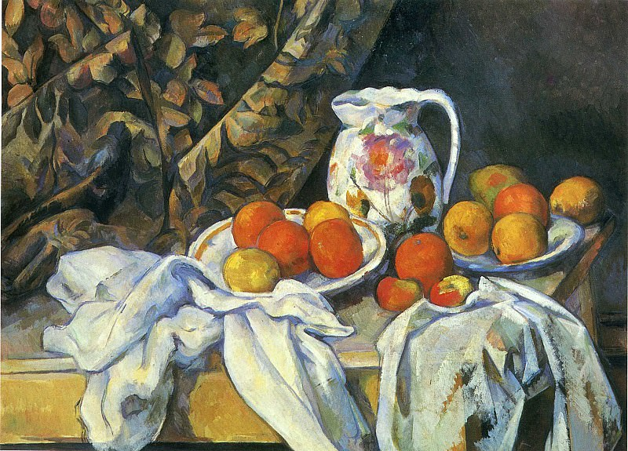

Ковер-Самолёт - Виктор Васнецов
Описание картины "Ковер-Самолёт - Виктор Васнецов":
Ковер-самолет – мечта любого ребенка. В этом сказочном предмете заключено вечное стремление человека к полету. На картине Васнецова этот волшебный предмет напоминает гигантскую птицу, распростершую крылья над бескрайними просторами. На ковре Иван-богатырь со своей добычей – клеткой с Жар-птицей. Богатырь уверенно держится на летающем подарке Бабы Яги, крепко сжимает в руках клетку. Он спокоен и сосредоточен, готов к новым испытаниям и непростым заданиям. Сопровождают полет три совы – вероятно, это посланницы Бабы Яги, хозяйки ковра-самолета. Они указывают путь, а может быть приглядывают за подарком. В отличие от богатыря на ковре, пейзаж в картине безжизненный и унылый: лениво текущая река, темно-зеленые берега, редкие деревья. Так художник противопоставляет реальный мир (обычный, лишенный привлекательности и разнообразия) и мир сказочный (многоцветный, яркий, энергичный). Ковер-самолет с героем изображен на фоне белого облачного неба, что сильнее подчеркивает яркость и многоцветие как самого ковра, так и одежды богатыря, а главное – жар птицы, сияющей, словно само солнце.
Больше информации о картине...